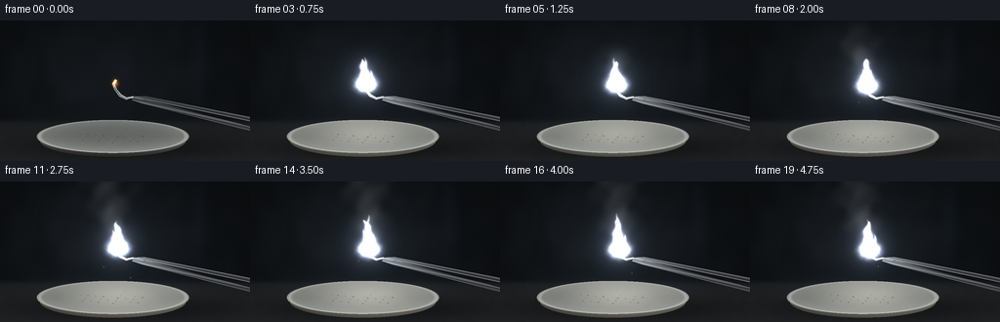
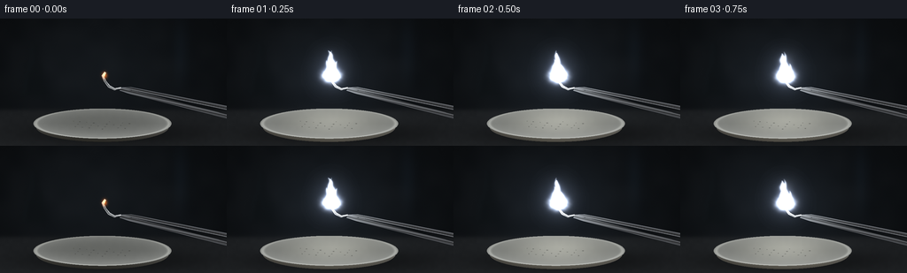

CODING AGENTS AS PIXEL WORLD MODELS
traex/GPT-6.1-Sol · phygen_127
点击播放 · 原生 RGB 像素
逐轮保存的候选
回放视频、检查图与代码变化。
每份候选均可单独播放。实际图片检查记录在下方工具轨迹中。
候选 01播放与检查图
点击播放 · 原生 RGB 像素


展开代码变化
--- 上一保存版本
+++ 本次保存版本
@@ -0,0 +1,319 @@
+"""Text-only procedural rendering of a burning magnesium ribbon.
+
+No assets or rendering packages are used. All geometry, illumination,
+smoke and flame fields are generated with numpy and Pillow.
+"""
+from pathlib import Path
+import json
+import math
+import numpy as np
+from PIL import Image, ImageDraw, ImageFilter
+from artifact_io import save
+
+
+ROOT = Path(__file__).resolve().parent
+SPEC = json.loads((ROOT / 'task_spec.json').read_text())
+W, H = SPEC['width'], SPEC['height']
+S = 3
+SW, SH = W * S, H * S
+Y, X = np.mgrid[0:SH, 0:SW].astype(np.float32) / S
+RNG = np.random.default_rng(12719)
+
+
+def smooth_noise(scale, seed):
+ rng = np.random.default_rng(seed)
+ gw, gh = int(W / scale) + 3, int(H / scale) + 3
+ lattice = rng.random((gh, gw)).astype(np.float32)
+ xx, yy = X / scale, Y / scale
+ ix, iy = xx.astype(int), yy.astype(int)
+ u, v = xx - ix, yy - iy
+ u, v = u * u * (3 - 2 * u), v * v * (3 - 2 * v)
+ return ((1-u)*(1-v)*lattice[iy, ix] + u*(1-v)*lattice[iy, ix+1]
+ + (1-u)*v*lattice[iy+1, ix] + u*v*lattice[iy+1, ix+1])
+
+
+N1 = smooth_noise(18, 4)
+N2 = smooth_noise(4, 9)
+N3 = smooth_noise(1.3, 16)
+GRAIN = RNG.normal(0, .48, (SH, SW)).astype(np.float32)
+
+
+def mask_poly(points, blur=0):
+ im = Image.new('L', (SW, SH))
+ ImageDraw.Draw(im).polygon([(round(x*S), round(y*S)) for x,y in points], fill=255)
+ if blur:
+ im = im.filter(ImageFilter.GaussianBlur(blur*S))
+ return np.asarray(im, dtype=np.float32) / 255
+
+
+def mask_line(points, width=1, blur=0):
+ im = Image.new('L', (SW, SH))
+ ImageDraw.Draw(im).line([(round(x*S), round(y*S)) for x,y in points], fill=255,
+ width=max(1, round(width*S)), joint='curve')
+ if blur:
+ im = im.filter(ImageFilter.GaussianBlur(blur*S))
+ return np.asarray(im, dtype=np.float32) / 255
+
+
+def composite(im, color, alpha):
+ alpha = np.clip(alpha, 0, 1)[...,None]
+ return im * (1-alpha) + np.asarray(color) * alpha
+
+
+def blur_field(field, radius):
+ # A floating point field, kept linear for the emissive bloom pass.
+ # Pillow's Gaussian filter does not support mode F; preserve the useful
+ # dynamic range with a normalized L representation.
+ maximum = max(float(np.max(field)), .0001)
+ im = Image.fromarray(np.uint8(np.clip(field/maximum*255, 0, 255)))
+ return np.asarray(im.filter(ImageFilter.GaussianBlur(radius*S)), dtype=np.float32)/255*maximum
+
+
+def gaussian(cx, cy, rx, ry):
+ return np.exp(-.5*((X-cx)/rx)**2-.5*((Y-cy)/ry)**2)
+
+
+def background():
+ vignette = np.clip(1-(((X-128)/170)**2+((Y-69)/108)**2)*.43, .15, 1)
+ light = gaussian(92, 63, 70, 55)
+ out = np.empty((SH, SW, 3), np.float32)
+ for k, c in enumerate([15, 18, 21]):
+ out[...,k] = (c + light*(6+k*.7) + (N1-.5)*4)*vignette
+ # Soft, indistinct darkroom/laboratory silhouettes, behind the subject.
+ vessel = mask_poly([(34,29),(35,47),(30,52),(24,88),(55,89),
+ (48,51),(43,47),(43,29)], blur=3.3)
+ out = composite(out, [12,16,18], vessel*.48)
+ edge = mask_line([(36,29),(36,48),(30,65),(27,85)], .7, 2.1)
+ out += edge[...,None] * np.array([9,12,14])
+ out += gaussian(204,36,6,25)[...,None]*np.array([3,5,7])
+ # A matte, slightly textured dark heat-resistant benchtop.
+ table = 1/(1+np.exp(-(Y-103)/1.3))
+ surface = np.zeros_like(out)
+ for k,c in enumerate([27,29,31]):
+ surface[...,k] = c + (Y-104)*.13 + (N2-.5)*2.2 + (N3-.5)*.6
+ out = composite(out, surface, table)
+ shadow = gaussian(130,130,72,9)
+ out *= (1-.45*shadow)[...,None]
+ return out
+
+
+BASE = background()
+
+
+def draw_dish(out, strength, cx, cy):
+ # A shallow refractory porcelain dish, with a shaded elliptical rolled rim.
+ # Front lip and bottom are drawn first, and the lit inner basin is above it.
+ bowlx, bowly, a, b = 115.5, 118.7, 78.0, 17.0
+ r2 = ((X-bowlx)/a)**2 + ((Y-bowly)/b)**2
+ rb = ((X-bowlx)/75)**2 + ((Y-(bowly+3.8))/17)**2
+ body = (rb<1) & (Y>bowly-1)
+ bodcol = np.empty_like(out)
+ for k,c in enumerate([88,87,83]):
+ bodcol[...,k] = c - np.maximum(Y-bowly,0)*2.4 + (X-115)*.08
+ bodcol += gaussian(cx,125,46,14)[...,None]*strength*np.array([66,63,57])
+ out = composite(out, bodcol, body.astype(float))
+ ell = r2 < 1
+ rr = np.sqrt(np.maximum(r2,0))
+ # Brighter crescent on the inside front, cooler falloff at the far rim.
+ curvature = 10 + 26*rr**3 + 21*np.clip((Y-bowly)/b,0,1)
+ basin = np.empty_like(out)
+ for k,c in enumerate([86,88,85]):
+ basin[...,k] = c + curvature + (N2-.5)*2
+ reflection = gaussian(cx,116,39,12)
+ basin += reflection[...,None]*strength*np.array([80,79,73])
+ out = composite(out, basin, ell.astype(float))
+ ring = np.exp(-((rr-.963)/.026)**2) * ell
+ rimcolor = np.zeros_like(out)
+ for k,c in enumerate([165,167,162]):
+ rimcolor[...,k] = c + (Y-bowly)*1.2 + strength*reflection*35
+ out = composite(out, rimcolor, ring*.88)
+ return out
+
+
+def metal_strip(out, points, near_a, near_b, strength, cx, cy, width):
+ mask = mask_poly(points)
+ ax,ay = near_a
+ bx,by = near_b
+ length = math.hypot(bx-ax, by-ay)
+ signed = ((X-ax)*(by-ay)-(Y-ay)*(bx-ax))/length
+ q = np.clip(np.abs(signed)/width, 0, 1)
+ # Reflected bands across the polished steel cross section.
+ val = 33 + 90*np.exp(-((q-.13)/.095)**2) + 38*np.exp(-((q-.68)/.24)**2)
+ val += 28*np.exp(-((q-.94)/.07)**2)
+ brushed = (np.sin((X*.21+Y*2.3)*S)*.7+(N3-.5)*3)
+ shine = gaussian(cx,cy,42,25)*strength*95
+ cols = np.stack([val+brushed+shine*.92,
+ val*1.025+brushed+shine*.97,
+ val*1.065+brushed+shine], axis=-1)
+ return composite(out, cols, mask)
+
+
+def draw_tweezers(out, strength, cx, cy):
+ # Two metal arms enter the shot from the right, their jaws gripping ribbon.
+ lower = [(135,81.5),(147,85.3),(258,113.5),(262,110),
+ (151,81.5),(136,79.9)]
+ out = metal_strip(out, lower, (262,110),(135,81.5), strength,cx,cy,4)
+ lower_edge = mask_line([(135,81.5),(149,85.2),(258,113.3)], .44)
+ out += lower_edge[...,None]*np.array([42,44,48])
+ upper = [(135,77.9),(147,77.4),(263,100.1),(264,105.1),
+ (149,81),(136,80.4)]
+ out = metal_strip(out, upper, (264,105.1),(135,77.9), strength,cx,cy,5)
+ edge = mask_line([(136,78),(148,77.65),(260,100)], .48)
+ out += edge[...,None] * (np.array([63,66,72])+strength*23)
+ # Recessed grip grooves, only at the handle end.
+ for x in np.arange(200,259,3.1):
+ yy = 78+(x-147)*.197
+ ridge = mask_line([(x,yy+.8),(x-.6,yy+3.3)], .3)
+ out *= (1-.23*ridge)[...,None]
+ return out
+
+
+def draw_ribbon(out, t, strength):
+ # Thin, bent magnesium ribbon; the tip oxidizes gradually into chalky ash.
+ front = [(136.4,78.9),(129.0,81.0),(122.0,77.8),(117.0,70.5),
+ (114.7,64.3),(117.9,59.9),(119.8,61.3),(117.5,65.6),
+ (120.1,70.9),(124.1,75.8),(129.5,78.5),(136.3,77.4)]
+ mask = mask_poly(front)
+ shade = 142+(X-119)*2.8+(N3-.5)*30
+ refl = gaussian(118,66,17,15)*strength*95
+ col = np.stack([shade+refl,shade*1.015+refl,shade*1.025+refl*.97],-1)
+ out = composite(out,col,mask)
+ back = mask_line([(135.7,79.6),(129,80.4),(123,77),(118.4,70.4),
+ (116.3,64.8),(119,61)], .55)
+ out = composite(out,[62,68,71],back*(1-.65*strength))
+ glint = mask_line([(129,78.5),(124.1,75.8),(120.1,70.9),(117.5,65.6)], .4)
+ out += glint[...,None]*np.array([56,58,62])
+ # A roughening white oxide front moves a few millimeters along the strip.
+ ash = mask * np.clip((69+t*1.75-Y)/5,0,1)
+ ashcolor = np.stack([193+(N3-.5)*42,195+(N3-.5)*39,192+(N3-.5)*37],-1)
+ out = composite(out,ashcolor,ash*.86)
+ return out
+
+
+def smoke_field(t, cx, cy, strength):
+ smoke = np.zeros((SH,SW),np.float32)
+ # An advecting procession of billows, growing and shearing with height.
+ # Emission history starts at ignition; no smoke is present before lighting.
+ for j in range(51):
+ born = -.12 + j*.11
+ age = t-born
+ if age < 0 or age>4.9:
+ continue
+ rise = 19*age + 3*age*age
+ px = cx - 3.4*age + 4*np.sin(age*2.0+born*2.3)*min(age,1.4)
+ py = cy - rise
+ rx = 2.7+age*4.3
+ ry = 4.0+age*3.1
+ # Smaller coherent billows produce a naturally irregular silhouette.
+ perturb = 1 + .22*np.sin(X*.2+Y*.16+t*1.3) + .15*np.cos(Y*.24-X*.15-t*2)
+ billow = np.exp(-.5*((X-px)/(rx*perturb))**2-.5*((Y-py)/ry)**2)
+ smoke += billow * .069*np.exp(-age*.29)*(0.8+.2*np.sin(born*17))
+ smoke *= (.66+.3*N1+.16*np.sin(X*.19+Y*.23+t*1.9))
+ return np.clip(smoke,0,.63)*min(1,strength*1.8)
+
+
+def flame_field(t,cx,cy,strength):
+ # Magnesium is dominated by intensely white incandescence, not yellow fire.
+ height = (29+3*np.sin(t*8.1)+2*np.sin(t*13.2))*np.sqrt(strength)
+ height=max(height,2)
+ z = cy-Y
+ u = z/height
+ bend = 2.0*np.sin(z*.19-t*7.6)+1.0*np.sin(z*.43-t*11.5)
+ center = cx + bend*np.clip(u,0,1) - 3.1*u*u
+ envelope = np.clip(1-u,0,1)**.58
+ width = (5.2+1.1*np.sin(z*.42+t*8))*envelope + .23
+ v = (X-center)/np.maximum(width,.25)
+ main = np.exp(-v*v*1.5)*np.clip(1-u,0,1)**.34
+ main *= (z>=-3) & (z<height)
+ # Independent, shorter side tongues and a blazing hot fragment at the base.
+ tongue = np.zeros_like(main)
+ for dx,hh,phase in [(-4.2,.68,2.1),(4.4,.55,4.7),(-1.5,1.08,1.2)]:
+ tiph=height*hh*(1+.09*np.sin(t*11+phase))
+ uu=z/tiph
+ cc=cx+dx+np.sin(z*.29-t*8+phase)*1.7*np.clip(uu,0,1)
+ ww=(2.9-.9*abs(dx)/4)*np.clip(1-uu,0,1)**.55+.18
+ f=np.exp(-((X-cc)/ww)**2)*np.clip(1-uu,0,1)**.46
+ tongue += f*((z>=0)&(z<tiph))*.55
+ base=gaussian(cx,cy,5.6,4.2)*1.1
+ filament = .93+.12*np.sin(z*.55-X*.6+t*14)+.055*np.sin(z*1.3+X*.75-t*17)
+ field=(main+tongue+base)*strength*filament
+ return field
+
+
+def render(i):
+ t=i/SPEC['fps']
+ # The initial hot tip rapidly flares; the remaining clip burns steadily.
+ if i==0:
+ strength=.055
+ else:
+ strength=(1-np.exp(-t*7.5))*(.95+.045*np.sin(t*7.9)+.027*np.sin(t*14.6))
+ cx=117.9+min(t*1.1,4.6)
+ cy=64.1+min(t*1.5,6.5)
+ out=BASE.copy()
+ # Local radiance reflected by the surroundings, with no camera motion.
+ out += gaussian(cx,cy,39,31)[...,None]*strength*np.array([9,11,14])
+ out += gaussian(cx,113,50,8)[...,None]*strength*np.array([12,13,14])
+ out=draw_dish(out,strength,cx,cy)
+ # Static crumbs within the bowl.
+ for j in range(20):
+ xx=83+(j*17.73)%66
+ yy=116+(j*7.61)%9
+ spot=gaussian(xx,yy,.35+(j%3)*.15,.17+(j%2)*.13)
+ out=composite(out,[47,48,46],spot*.55)
+ out=draw_tweezers(out,strength,cx,cy)
+ out=draw_ribbon(out,t,strength)
+ sm=smoke_field(t,cx,cy,strength)
+ smoke_light=gaussian(cx,cy-11,25,30)
+ smoke_color=np.empty_like(out)
+ for k,c in enumerate([115,121,127]):
+ smoke_color[...,k]=c+strength*smoke_light*(88-k*4)
+ out=composite(out,smoke_color,sm)
+ flame=flame_field(t,cx,cy,strength)
+ if i==0:
+ # A tiny orange-white ignition point, preceding the characteristic flash.
+ start=gaussian(cx,cy,1.9,2.4)
+ out += start[...,None]*np.array([213,91,20])
+ else:
+ broad=blur_field(flame,12)
+ medium=blur_field(flame,4.0)
+ near=blur_field(flame,1.15)
+ # Subtle cool halo around an overexposed white magnesium flame.
+ out += broad[...,None]*np.array([146,160,196])
+ out += medium[...,None]*np.array([99,111,145])
+ out += near[...,None]*np.array([147,165,203])
+ out += flame[...,None]*np.array([650,671,705])
+ # Warm specks at the actual reaction site, not an orange flame envelope.
+ out += gaussian(cx-2,cy+2,2.3,1.4)[...,None]*np.array([77,37,7])*strength
+ # Sparse particles shed by the reacting metal. Ballistic paths have gravity.
+ for j in range(11):
+ born=.48+j*.38
+ age=t-born
+ if age<0 or age>1.7:
+ continue
+ vx=(-1 if j%2 else 1)*(4+(j*2.7)%9)
+ vy=-7-(j*3.1)%9
+ sx=118+born*1.1+vx*age
+ sy=64+born*1.5+vy*age+23*age*age
+ if sy>123:
+ sy=123+(j%3)*.4
+ if age<.5:
+ ember=gaussian(sx,sy,.31,.37)
+ out += ember[...,None]*np.array([251,227,192])*max(0,1-age/.6)
+ out += gaussian(sx,sy,1.05,1.05)[...,None]*np.array([23,25,30])*max(0,1-age/.6)
+ else:
+ flake=gaussian(sx,sy,.38,.27)
+ out=composite(out,[179,181,175],flake*.78)
+ # Gentle sensor grain and lens vignette; oversampling keeps edges natural.
+ out += GRAIN[...,None]
+ out=np.clip(out,0,255).astype(np.uint8)
+ return np.asarray(Image.fromarray(out).resize((W,H),Image.Resampling.LANCZOS))
+
+
+def main():
+ frames=np.stack([render(i) for i in range(SPEC['frames'])])
+ save(frames,ROOT)
+ print('Saved',frames.shape,frames.dtype,'at',SPEC['fps'],'fps')
+
+
+if __name__=='__main__':
+ main()
可观测工具轨迹
实际执行的命令与返回图片。
命令 1exit 0
/bin/bash -lc 'ls -la && cat prompt.txt && cat GENERATION_RULES.md && cat task_spec.json'
命令 2exit 0
/bin/bash -lc 'cat artifact_io.py'
命令 3exit 0
/bin/bash -lc "python - <<'PY'
import numpy, PIL
print('numpy',numpy.__version__,'PIL',PIL.__version__)
PY"命令 4exit 1
/bin/bash -lc "python generate.py && python - <<'PY'
from pathlib import Path
import numpy as np
from PIL import Image
p=Path('.')
a=np.load(p/'pixels.npz')['pixels']
print('Packed tensor:',a.shape,a.dtype)
for i in [0,1,5,10,19]:
f=np.asarray(Image.open(p/'frames'/f'{i:02d}.png'))
print(i,'shape',f.shape,'RGB mean',f.mean((0,1)).round(2),'white pixels',((f.min(2)>245)).sum())
print('Artifacts:', ', '.join(str(x) for x in [p/'pixels.npz',p/'index.html',p/'inspection.png',p/'transition_check.png'] if x.exists()))
PY"命令 5exit 0
/bin/bash -lc "python generate.py && python - <<'PY'
from pathlib import Path
import numpy as np
from PIL import Image
p=Path('.')
a=np.load(p/'pixels.npz')['pixels']
print('Packed tensor:',a.shape,a.dtype)
for i in [0,1,5,10,19]:
f=np.asarray(Image.open(p/'frames'/f'{i:02d}.png'))
print(i,'shape',f.shape,'RGB mean',f.mean((0,1)).round(2),'white pixels',((f.min(2)>245)).sum())
print('Artifacts:', ', '.join(str(x) for x in [p/'pixels.npz',p/'index.html',p/'inspection.png',p/'transition_check.png'] if x.exists()))
PY"命令 6exit 0
/bin/bash -lc 'command -v ffmpeg || true'
保存候选 1 份；完成命令 6 次；可验证图片返回 0 张。原始 API 响应与完整日志保留在本地。